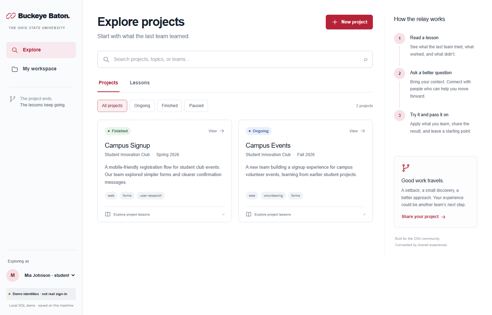
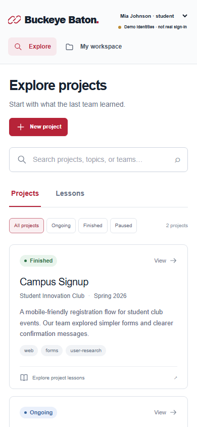

学生发布有上下文的经验，后来团队提问、应用并回填结果。OSU Staff 将具体问题引荐给行业 Mentor。
Next.js 应用位于仓库根目录。旧环境练习已按用户要求移除，历史可从 Git 找回。品牌与本地回归验收已完成。
本地 SQL、权限、持久化与人工浏览器核心旅程已有验证。品牌更新后的 2/2 自动化浏览器回归已通过。
真实 PostgreSQL/Neon 连接、主办方 AWS 权益和公网部署尚未验证。演示身份不是真实登录。
项目和经验发布、搜索、Student/Mentor/Staff 工作台、针对问题的引荐、导师回复、保存经验、采用结果与来源追溯。
AI 简介、AI 导师推荐、真实认证、上传、完整 fork、复杂接力图和通知中心。
White #ffffff · Slate #17212f · Scarlet #b62338。强调色用于主要操作、导航与经验关联。
Arial / Helvetica / sans-serif；标题、正文、元信息和控件使用统一层级。
链式接力图标采用 SVG；产品名称为 Buckeye Baton。概念图保留早期工作名称，仅作为历史视觉参考。
桌面使用侧栏、项目区与辅助指南；390px 手机使用顶栏和单列内容，保持身份切换与主要操作可用。

桌面，更新于 2026-10-24

390px 手机，更新于 2026-10-24
Next.js 15.5.28 · React · TypeScript · Node 22 · Tailwind · pg / PostgreSQL。显式本地 PGlite 持久化模式用于无云端连接时的演示和测试。
项目 → 经验 → 学生提问 → Staff 引荐 → Mentor 回复 → 后续项目应用并反馈。服务端执行角色与归属检查，页面共享同一契约。
src/app/ | 页面与 /api 路由 |
src/components/ | 可复用界面 |
src/lib/client.ts | 请求封装与带资源键的加载状态 |
src/server/ | 权限、输入校验、SQL 与事务 |
src/shared/ | 共用类型和虚构样例 |
db/schema.sql | 数据库结构 |
scripts/ | 数据库初始化 |
tests/ | 接口与浏览器回归 |
docs/ | 范围、契约与验收 |
README.md | 运行入口 |
AGENTS.md | 后续 agent 工作约定 |
DECISIONS.md | 决策与被替代的历史选择 |
从仓库根目录执行 npm run dev；生产模式为 npm run build 后 npm start。健康检查 GET /api/health。
前端负责页面与组件，后端负责 SQL、服务端和路由。共用类型与依赖集中协调。独立 codex/ 分支，不覆盖队友工作。
GitHub：BOWEN2491/buckeye-baton。Neon/PostgreSQL 与 AWS Amplify 为待配置的云端连接，尚无上线结论。当前功能不调用模型 API。
User、Project、Lesson、Comment、Referral、Adoption。采用记录对经验/后续项目唯一；只有已报告结果才计入贡献。导师回复和引荐完成处于同一事务。
DATABASE_MODE、DATABASE_URL、PGLITE_DATA_DIR。本地 .env.local 和 .data 被 Git 忽略；不得提交真实连接信息。
npm ci npm run db:setup npm run typecheck npm run test:backend npm run build npm run test:e2e npm start
用户将 Pass It On 更名为 Buckeye Baton，并授权清理旧环境练习。应用提升到根目录；保留协作约定、先前工作来源说明与 Git 历史。
Project：项目；Lesson：一条有上下文的亲历经验；Referral：Staff 引荐；Adoption：后来项目保存并报告使用结果。
想法只保存在本机浏览器 localStorage，不会自动修改仓库。通过“复制 HTML”取得片段，写入 project-docs/index.html 中的 claude:wishlist:start 和 claude:wishlist:end 之间，再提交才会同步给队友。
Added: 2026-10-24 · AI 识别提问并按标签预分类，提供若干 Mentor 候选，由 Staff 最终选择。第一版不实现。
用户确认新名称并要求删除旧练习。新的 Next.js 应用成为唯一运行入口，修复标签切换时旧响应类型导致的客户端错误；重新验收已通过。
独立 pass-it-on/ 子目录，保留赛前文件；确认 Honda challenge 与 Student/Mentor/Staff。Node 22 构建和浏览器核心旅程通过，完整验收在进行，真实 AWS/Neon 尚未验证。
用户转述的云端 Linux 报告通过；本机 Windows 尚未验证。GitHub API 实查 nnyyttg 为 write，无需重复邀请，实际推送与首个 PR 仍待完成。
加入 AGENTS、PROJECT_CONTEXT、完整项目页与维护协议；背景明确区分已验证、历史证据和未知状态。
42a494a：实际仓库安装与团队协作说明；main 已推送 GitHub。
86faf81：隔离环境、React/FastAPI 回显、Streamlit 后备、可选 API 检查、测试与披露材料。